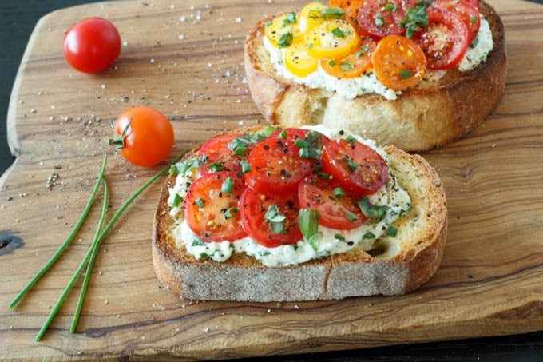

Fresh Tomato and Herbed Ricotta Bruschetta

Description
A quick easy appetizer, featuring fresh tomatoes and herbed ricotta. Perfect for game day, potlucks, parties, BBQ's, or anytime as a light meal.
Ingredients
- 1 pint cherry tomatoes
- 1 cup ricotta cheese
- ¼ cup finely chopped spinach leaves
- 2 Tablespoons finely chopped basil leaves
- 1 Tablespoon finely chopped chives
- 1 baguette French bread or similar artisan country bread cut in ½ inch thick slices (8-10 slices)
- 2-3 Tablespoons olive oil
- 1-2 garlic cloves peeled and left whole
- Salt and pepper to taste
Steps
- Cut cherry tomatoes in half. Season with salt and pepper. Set aside.
- In a small mixing bowl combine ricotta cheese, spinach, basil and chives. Stir to combine thoroughly. Set aside.
- Toast bread, in a toaster or under the broiler in the oven ( or on the grill if you like), until golden brown. Rub toast vigorously with whole raw garlic clove. The rough surface of the bread helps shave the garlic clove. (approx. 2-3 strokes per slice of bread, add more or less to taste). Drizzle or brush top side of toast with olive oil.
- Assemble bruschetta by layering each piece of toast with ricotta mixture, and sliced tomatoes. Sprinkle with salt and pepper and garnish with snipped chives and chopped basil.